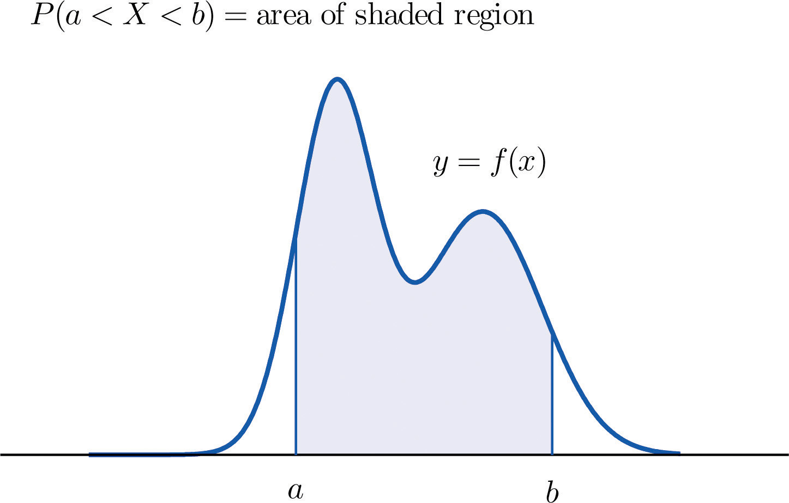
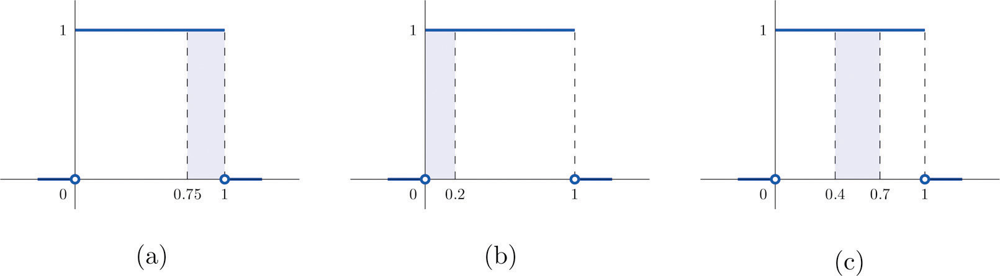
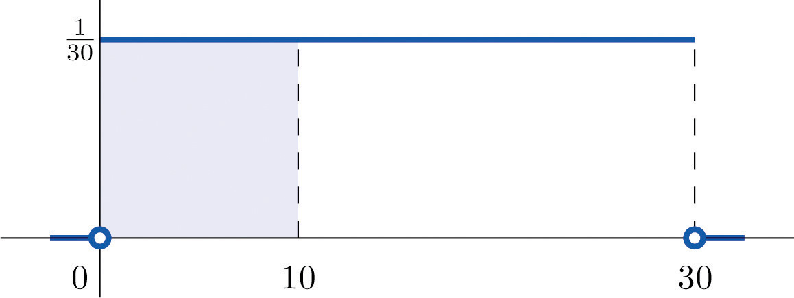
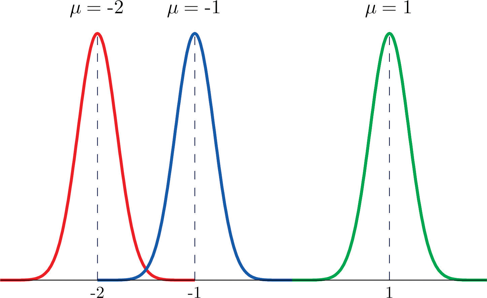
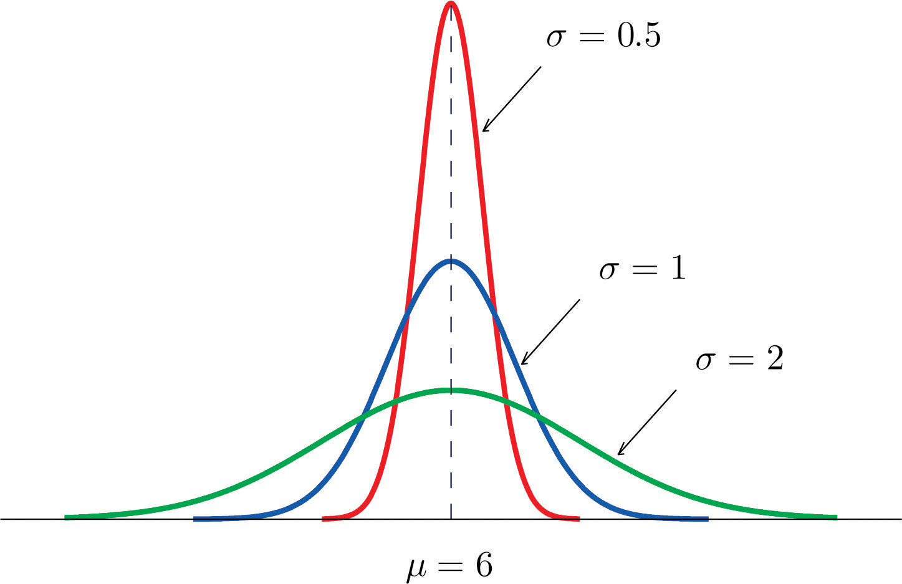
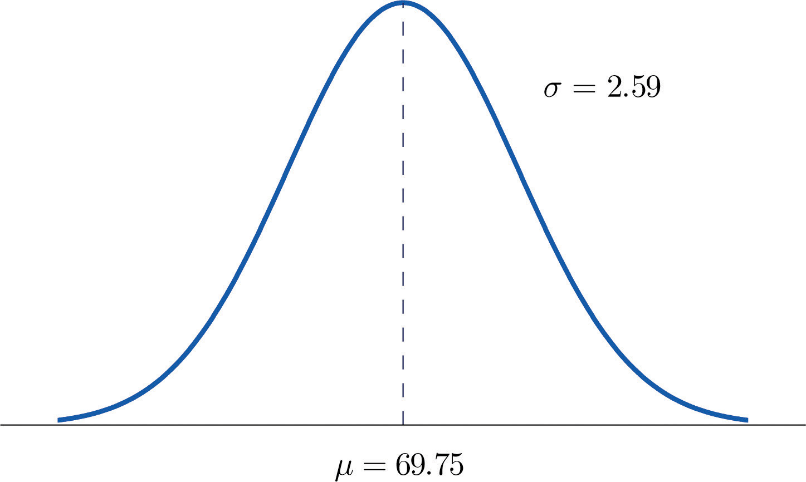

For a discrete random variable X the probability that X assumes one of its possible values on a single trial of the experiment makes good sense. This is not the case for a continuous random variable. For example, suppose X denotes the length of time a commuter just arriving at a bus stop has to wait for the next bus. If buses run every 30 minutes without fail, then the set of possible values of X is the interval denoted , the set of all decimal numbers between 0 and 30. But although the number 7.211916 is a possible value of X, there is little or no meaning to the concept of the probability that the commuter will wait precisely 7.211916 minutes for the next bus. If anything the probability should be zero, since if we could meaningfully measure the waiting time to the nearest millionth of a minute it is practically inconceivable that we would ever get exactly 7.211916 minutes. More meaningful questions are those of the form: What is the probability that the commuter's waiting time is less than 10 minutes, or is between 5 and 10 minutes? In other words, with continuous random variables one is concerned not with the event that the variable assumes a single particular value, but with the event that the random variable assumes a value in a particular interval.
The probability distribution of a continuous random variable X is an assignment of probabilities to intervals of decimal numbers using a function , called a density functionThe function such that probabilities of a continuous random variable X are areas of regions under the graph of ., in the following way: the probability that X assumes a value in the interval is equal to the area of the region that is bounded above by the graph of the equation , bounded below by the x-axis, and bounded on the left and right by the vertical lines through a and b, as illustrated in Figure 5.1 "Probability Given as Area of a Region under a Curve".
Figure 5.1 Probability Given as Area of a Region under a Curve
This definition can be understood as a natural outgrowth of the discussion in Section 2.1.3 "Relative Frequency Histograms" in Chapter 2 "Descriptive Statistics". There we saw that if we have in view a population (or a very large sample) and make measurements with greater and greater precision, then as the bars in the relative frequency histogram become exceedingly fine their vertical sides merge and disappear, and what is left is just the curve formed by their tops, as shown in Figure 2.5 "Sample Size and Relative Frequency Histograms" in Chapter 2 "Descriptive Statistics". Moreover the total area under the curve is 1, and the proportion of the population with measurements between two numbers a and b is the area under the curve and between a and b, as shown in Figure 2.6 "A Very Fine Relative Frequency Histogram" in Chapter 2 "Descriptive Statistics". If we think of X as a measurement to infinite precision arising from the selection of any one member of the population at random, then is simply the proportion of the population with measurements between a and b, the curve in the relative frequency histogram is the density function for X, and we arrive at the definition just above.
Every density function must satisfy the following two conditions:
Because the area of a line segment is 0, the definition of the probability distribution of a continuous random variable implies that for any particular decimal number, say a, the probability that X assumes the exact value a is 0. This property implies that whether or not the endpoints of an interval are included makes no difference concerning the probability of the interval.
For any continuous random variable X:
A random variable X has the uniform distribution on the interval : the density function is if x is between 0 and 1 and for all other values of x, as shown in Figure 5.2 "Uniform Distribution on ".
Figure 5.2 Uniform Distribution on

Solution:
Figure 5.3 Probabilities from the Uniform Distribution on
A man arrives at a bus stop at a random time (that is, with no regard for the scheduled service) to catch the next bus. Buses run every 30 minutes without fail, hence the next bus will come any time during the next 30 minutes with evenly distributed probability (a uniform distribution). Find the probability that a bus will come within the next 10 minutes.
Solution:
The graph of the density function is a horizontal line above the interval from 0 to 30 and is the x-axis everywhere else. Since the total area under the curve must be 1, the height of the horizontal line is 1/30. See Figure 5.4 "Probability of Waiting At Most 10 Minutes for a Bus". The probability sought is By definition, this probability is the area of the rectangular region bounded above by the horizontal line , bounded below by the x-axis, bounded on the left by the vertical line at 0 (the y-axis), and bounded on the right by the vertical line at 10. This is the shaded region in Figure 5.4 "Probability of Waiting At Most 10 Minutes for a Bus". Its area is the base of the rectangle times its height, Thus
Figure 5.4 Probability of Waiting At Most 10 Minutes for a Bus
Most people have heard of the “bell curve.” It is the graph of a specific density function that describes the behavior of continuous random variables as different as the heights of human beings, the amount of a product in a container that was filled by a high-speed packing machine, or the velocities of molecules in a gas. The formula for contains two parameters μ and σ that can be assigned any specific numerical values, so long as σ is positive. We will not need to know the formula for , but for those who are interested it is
where and e ≈ 2.71828 is the base of the natural logarithms.
Each different choice of specific numerical values for the pair μ and σ gives a different bell curve. The value of μ determines the location of the curve, as shown in Figure 5.5 "Bell Curves with ". In each case the curve is symmetric about μ.
Figure 5.5 Bell Curves with σ = 0.25 and Different Values of μ
The value of σ determines whether the bell curve is tall and thin or short and squat, subject always to the condition that the total area under the curve be equal to 1. This is shown in Figure 5.6 "Bell Curves with ", where we have arbitrarily chosen to center the curves at μ = 6.
Figure 5.6 Bell Curves with μ = 6 and Different Values of σ
The probability distribution corresponding to the density function for the bell curve with parameters μ and σ is called the normal distributionAssignment of probabilities to a continuous random variable using a bell curve for the density function. with mean μ and standard deviation σ.
A continuous random variable whose probabilities are described by the normal distribution with mean μ and standard deviation σ is called a normally distributed random variable, or a normal random variableA continuous random variable whose probabilities are determined by a bell curve. for short, with mean μ and standard deviation σ.
Figure 5.7 "Density Function for a Normally Distributed Random Variable with Mean " shows the density function that determines the normal distribution with mean μ and standard deviation σ. We repeat an important fact about this curve:
The density curve for the normal distribution is symmetric about the mean.
Figure 5.7 Density Function for a Normally Distributed Random Variable with Mean μ and Standard Deviation σ

Heights of 25-year-old men in a certain region have mean 69.75 inches and standard deviation 2.59 inches. These heights are approximately normally distributed. Thus the height X of a randomly selected 25-year-old man is a normal random variable with mean μ = 69.75 and standard deviation σ = 2.59. Sketch a qualitatively accurate graph of the density function for X. Find the probability that a randomly selected 25-year-old man is more than 69.75 inches tall.
Solution:
The distribution of heights looks like the bell curve in Figure 5.8 "Density Function for Heights of 25-Year-Old Men". The important point is that it is centered at its mean, 69.75, and is symmetric about the mean.
Figure 5.8 Density Function for Heights of 25-Year-Old Men
Since the total area under the curve is 1, by symmetry the area to the right of 69.75 is half the total, or 0.5. But this area is precisely the probability P(X > 69.75), the probability that a randomly selected 25-year-old man is more than 69.75 inches tall.
We will learn how to compute other probabilities in the next two sections.
A continuous random variable X has a uniform distribution on the interval Sketch the graph of its density function.
A continuous random variable X has a uniform distribution on the interval Sketch the graph of its density function.
A continuous random variable X has a normal distribution with mean 100 and standard deviation 10. Sketch a qualitatively accurate graph of its density function.
A continuous random variable X has a normal distribution with mean 73 and standard deviation 2.5. Sketch a qualitatively accurate graph of its density function.
A continuous random variable X has a normal distribution with mean 73. The probability that X takes a value greater than 80 is 0.212. Use this information and the symmetry of the density function to find the probability that X takes a value less than 66. Sketch the density curve with relevant regions shaded to illustrate the computation.
A continuous random variable X has a normal distribution with mean 169. The probability that X takes a value greater than 180 is 0.17. Use this information and the symmetry of the density function to find the probability that X takes a value less than 158. Sketch the density curve with relevant regions shaded to illustrate the computation.
A continuous random variable X has a normal distribution with mean 50.5. The probability that X takes a value less than 54 is 0.76. Use this information and the symmetry of the density function to find the probability that X takes a value greater than 47. Sketch the density curve with relevant regions shaded to illustrate the computation.
A continuous random variable X has a normal distribution with mean 12.25. The probability that X takes a value less than 13 is 0.82. Use this information and the symmetry of the density function to find the probability that X takes a value greater than 11.50. Sketch the density curve with relevant regions shaded to illustrate the computation.
The figure provided shows the density curves of three normally distributed random variables XA, XB, and XC. Their standard deviations (in no particular order) are 15, 7, and 20. Use the figure to identify the values of the means , , and and standard deviations , , and of the three random variables.
The figure provided shows the density curves of three normally distributed random variables XA, XB, and XC. Their standard deviations (in no particular order) are 20, 5, and 10. Use the figure to identify the values of the means , , and and standard deviations , , and of the three random variables.
Dogberry's alarm clock is battery operated. The battery could fail with equal probability at any time of the day or night. Every day Dogberry sets his alarm for 6:30 a.m. and goes to bed at 10:00 p.m. Find the probability that when the clock battery finally dies, it will do so at the most inconvenient time, between 10:00 p.m. and 6:30 a.m.
Buses running a bus line near Desdemona's house run every 15 minutes. Without paying attention to the schedule she walks to the nearest stop to take the bus to town. Find the probability that she waits more than 10 minutes.
The amount X of orange juice in a randomly selected half-gallon container varies according to a normal distribution with mean 64 ounces and standard deviation 0.25 ounce.
The weight X of grass seed in bags marked 50 lb varies according to a normal distribution with mean 50 lb and standard deviation 1 ounce (0.0625 lb).
The graph is a horizontal line with height 1/7 from x = 5 to x = 12
The graph is a bell-shaped curve centered at 100 and extending from about 70 to 130.
0.212
0.76
, , , , ,
0.3542